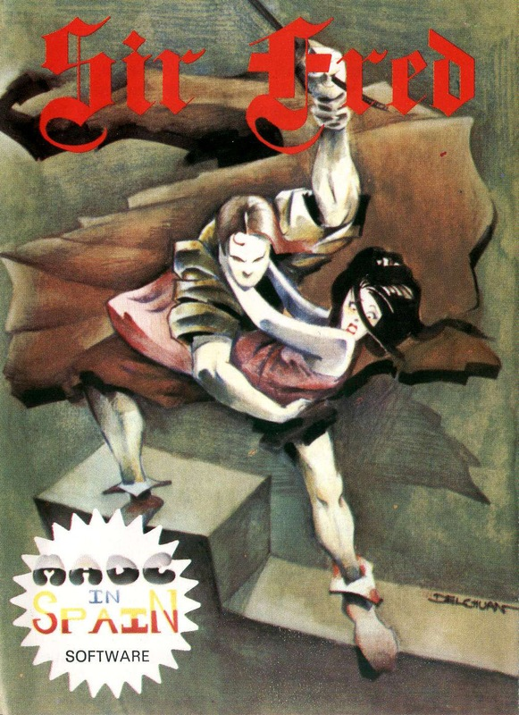
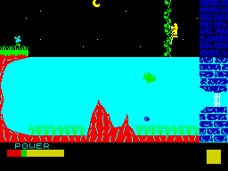
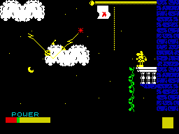

Sir Fred


{kind=link}

| Publisher: | Mikro-Gen |
| Price: | £9.95 |
| Year: | 1986 |
| Source: | CRASH, Issue 26 |

Sir Fred is a fairy tale about brave knights and damsels in distress. So to start in the way of all good fairy tales: Once upon a time there was a wise old king who ruled over a happy land. Except for one thing, the evil Hugh D’Unwyt, an evil dude who’s stolen away the King’s fair daughter. Since the kingdom is usually such a happy place, the bored Knights are all off on a quest for the fabled gold lame string vest. A hero is needed and the only knighted personage left in the kingdom brave (or stupid) enough to take up the quest is the aged and corpulent Sir Fred.
The princess is holed up in the Castle Feare, stronghold of D’Unwyt. When the Baron stole away the King’s daughter he knew that trouble would be on its way, so his castle is extremely well guarded and near impregnable to a lonesome Knight. Undaunted by his daunting task, Sir Fred decides to try and battle his way to win the hand of his fair lady.

way into the castle in Mikro-Gen’s
SIR FRED
The way to rescue the princess and become a hero is to collect and shrewdly use certain objects. Unlike a majority of arcade adventures objects are placed in a different place each time you play. Though mapping the game is still quite easy, placing the objects isn’t. Though not random there are fifty six different permutations of the where the different items essential to your quest will appear.
Sir Fred himself is an action-packed spritette capable of many actions and looking remarkably similar to something out of a Mordillo cartoon. When you start, all Sir Fred can do is run and jump. His running style is quite a bit more realistic than most and has actual inertia. Holding down left or right doesn’t boot Sir Fred straight into top gear — instead, he gradually speeds up to top whack. Change direction, and the Knight’s heels stick into the ground and little sparks fly off as he reaches zero speed. You can run into problems (literally). If you run Sir Fred at full tilt down a flight of stairs, for instance, he’s more than likely to end up flying head over heels down them.
Objects are picked up with the select key. Along the bottom of the screen are a number of boxes that can contain an object. A blue box highlights the window currently under your control. To use an object press the use key and the blue boxed item will come into use. On some of the weapons only a limited period of use is permitted, so a little countdown appears above the window and decrements every time the object gets used. If the counter gets to zero then the object is no longer in Sir Fred’s inventory.

Sir Fred perches on a ledge.
Lightning zaps through the sky and your
hero has to leap onto the middle cloud
— that’s where he can use a lever to
open a secret trapdoor which leads into
the castle
Different objects can add to Sir Fred’s abilities. Pick a sword, and the knight is capable of being a swashbuckling swordsman if you add some neat control effort. One of the weaker weapons is the the stone that can be thrown — another good one is the bow and arrow.
What makes Sir Fred different to most of the Miner Willy’s and Wally Week’s of this world is his ability to interact with the background. There are pools that he can swim in, ropes to be climbed and cliffs to jumped off, all easily accomplished with up, down, left, right and fire. Action packed Fred, invulnerable he isn’t. Running on a limited energy supply, Sir Fred has to try and avoid bumping into various nasties and making silly mistakes. All these silly activities are damaging to Fred’s energy band, shown at the bottom of the screen. Only one energy band is supplied and if it reaches zero then the game’s over. Nasties you’ll encounter are of a fairly common sort: things like snakes, fish and rats, all moving along preset patterns.
The puzzles and tasks to be accomplished are of a fairly complex sort. Just like any arcade adventure nowadays Sir Fred’s world is shown in flick screens, with lots of medieval-type backgrounds in this case. The more of the castle you visit, the better your end percentage. Near a hundred percent is needed to rescue the princess and what a daunting task that is.
CRITICISM
“This is an excellent arcade adventure with lovely graphics. The main character is fab, and looks like he’s been lifted straight from a Mordillo cartoon. The animation on him is incredible for such a tiny character as he swims, swings and runs through the castle and its lands. The game is a tricky one, and there are some pretty nifty puzzles to be solved before the Princess falls into your arms. This game really appealed to me, who cares about an ancient storyline when a game is as good fun as this?”
“Dear Oh Dear! How many times have we had the “rescue the beautiful princess from the wicked knight” story before? I must admit, though, that the inlay is very well set out, with a very poetic poem to set the scene. The game is similar to JSW, but has superior graphics. The man, Fred, jumps, swims, runs and walks in liquid animation, and is capable of making bigger jumps if he takes a run-up. If you run one way, and then change direction, little skid marks appear at his heels. There are better platform games on the market, but this one is nice enough. It may appeal more to younger girls with all this talk of fairytale knights and princesses...”
“This is an interesting departure from the Wally series. It is still an animated adventure with lots of objects to collect and many locations to use them in. The screens are well designed and very colourful, with the usual Mikro-Gen attention to detail. The character of Sir Fred is smoothly animated as he runs, swims and climbs. The only problem with playing this game is the controls. Though only six controls are needed there are great troubles with getting your jumps right and it takes lots of practise to use the ropes without falling off. I enjoyed playing this game and would recommend it to anybody who enjoys the Wally games and would like to try a slightly more advanced game.”
COMMENTS
| Control keys: | Definable |
| Joystick: | Kempston and Cursor |
| Keyboard play: | Very fast and responsive |
| Use of colour: | Some attribute clash but otherwise tasteful |
| Graphics: | Pretty backdrops that are very detailed plus a very action packed sprite |
| Sound: | No tune but nice spot effects |
| Skill levels: | One |
| Screens: | 36 |
| General rating: | A great platform adventure that’s quite novel |
| Use of computer: | 83% |
| Graphics: | 92% |
| Playability: | 90% |
| Getting started: | 86% |
| Addictive qualities: | 91% |
| Value for money: | 89% |
| Overall: | 91% |